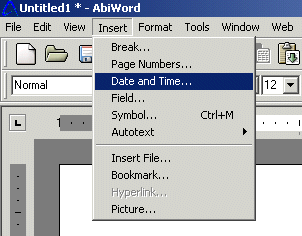
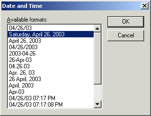

The next step in creating your document is to implement the date and time function into your document.
Select "Insert" located on the menu at the top of the screen.
Select "Date and Time" from the list.

Choose from one of the "available formats" from the list.
Select the "OK" button.

At this point you should see the date and time that you choose displayed on your letter.
Now that you have completed the above six steps in this lesson as well as typed your letter. You're ready to Print your document to see how it looks.